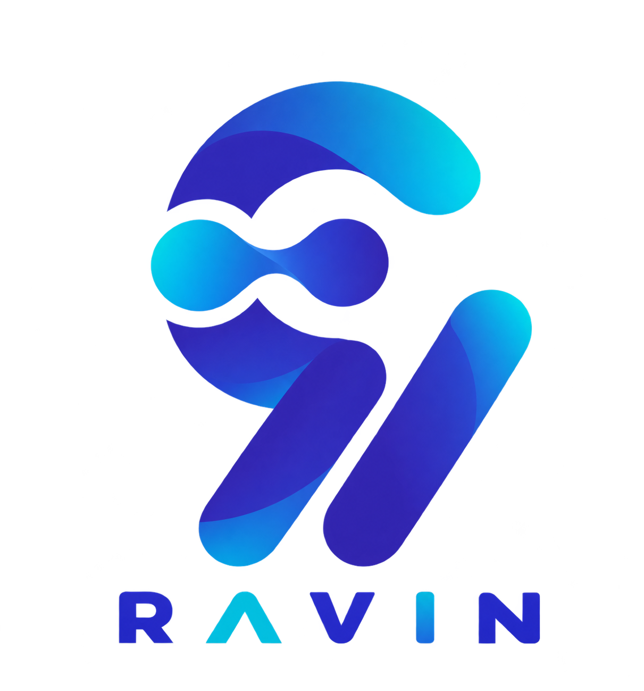

Help users complete real work with Ravin, an in-product assistant for learning and support.
My role
Product / UX Designer
User research
Competitive analysis
Agent Experience definition
Conversation flows
Trust and error states
UI design
Timeline
Approximately 2 months
Context
Enterprise AIB2BConversation Design
Users needed a simpler way to learn the system, find organizational knowledge, and get help. The assistant’s role, scope, personality, and response to ambiguous or unsupported requests still needed to be defined.
An inaccurate answer could cause wasted time, incorrect process execution, or loss of trust. Users had different levels of expertise, while the system had specialized processes, sensitive data, and limited knowledge and integrations.
The design question
How could the assistant offer useful guidance while making its capabilities and limits clear, and keeping consequential decisions with the user?
How I investigated
I combined user research with product and technical context to define what the assistant should do.
User interviews
Explored when users needed help, how they learned tasks, and where they turned for answers. Some could not describe the problem or use the right terminology; others needed step-by-step guidance.
Stakeholder sessions
Clarified goals, organizational constraints, ownership, and capability boundaries. The experience needed to match the system’s available knowledge rather than create unrealistic expectations.
Competitive analysis
Reviewed conversation entry, suggestions, response presentation, and state feedback, focusing on how other assistants handled ambiguity, missing answers, and failed interactions.
User behavior analysis
Found that users differed in their ability to write precise prompts. Clarification and guidance had to be part of the main interaction, rather than an exception.
Interview guide · topics and questions
Help-seeking: When do you need training or support? Which questions, errors, or uncertainties recur? When do support requests increase?
Learning: How do you learn the system and its workflows? Where do you find organizational rules and task guidance?
Experience: How do novice and experienced users’ needs differ? How comfortable are users with digital tools?
Shared knowledge: What do you ask colleagues or managers? Which knowledge is undocumented and learned through experience?
Sensitive decisions: How do you handle ambiguous, high-impact situations? Which issues most often reach the Support Team?
Findings and design implications
Eight research findings, each with a specific implication for the assistant’s design.
1. Learning happens during real work
Finding
Users learned through daily tasks and often turned to colleagues or support rather than formal documentation.
Design implication
Provide short, relevant, actionable guidance when the user gets stuck in a workflow.
2. Questions arise at the point of uncertainty
Finding
Users usually asked after encountering a specific problem and wanted help with that immediate issue.
Design implication
Answer the current problem first; keep broader explanations and learning material optional.
3. Questions go beyond the interface
Finding
Users asked about process order, workflow logic, terminology, business rules, and what to do in a particular situation.
Design implication
Connect system, process, and domain knowledge instead of limiting assistance to UI instructions.
4. Experience changes the kind of help needed
Finding
Novice users needed basic concepts and task steps; experienced users faced exceptions and more complex scenarios.
Design implication
Adapt response depth to the request and the level of knowledge inferred from the conversation.
5. Operational knowledge is not always documented
Finding
Some knowledge came from experience and colleagues, and working practices could vary between teams or contexts.
Design implication
Distinguish formal rules from local practices. If a reliable answer is unavailable, disclose uncertainty or refer to an authoritative source.
6. Many questions involve a decision
Finding
Users asked whether an action was appropriate, what should happen next, or what its consequences might be. Human confirmation mattered in sensitive situations.
Design implication
Explain options, rules, and implications without taking the final decision away from the user.
7. Repeated questions can reflect missing context
Finding
Concepts were questioned again when differences between similar terms or their effects on later steps remained unclear.
Design implication
Explain concepts in the current scenario, adding a short comparison or example when useful.
8. An error can start earlier in the workflow
Finding
Some errors appeared only after users reached a later step with incomplete or incorrect data entered earlier.
Design implication
Troubleshooting should revisit relevant earlier steps and data rather than focus only on the current error message.
Designing the Agent Experience (AX)
Agent Experience (AX) became the core of the project: defining how Ravin should behave, not just how its interface should look.
I defined the assistant’s role, scope, behavioral boundaries, and conversation principles before designing the UI. The research shifted the goal from delivering training content to supporting users at a moment of uncertainty within their work.
Understand the situation
Consider intent and workflow context; clarify an incomplete request before responding.
Make help fit the user
Answer the immediate need first, adapting detail to the user’s inferred experience.
Guide without taking over
Explain options and relevant rules while keeping sensitive decisions with the user.
Make limits visible
Communicate uncertainty and knowledge boundaries rather than create unjustified confidence.
These principles shaped the conversation model, trust and error handling, and the interface states below.
The interaction model
Understand intent
Clarify when needed
Guide
Respond
When a request is unclear
Ask a clarifying question before answering; do not assume every prompt is complete or precise.
When the answer is supported
Address the immediate need first, using the workflow context and an appropriate level of detail.
When knowledge is insufficient
State the limitation, distinguish uncertainty from certainty, and suggest an appropriate next step instead of guessing.
When a decision is sensitive
Provide a relevant source, rule, or rationale. Explain options while keeping the user in control of the decision.
When a task has failed
Guide the user through possible causes, related data, and previous steps to locate the root of the problem.
Making the behavior visible in the UI
I designed the interface after defining the assistant’s behavior, with clear entry, feedback, and recovery paths.
Intelligent assistant

Ravin intelligent assistant
How do I create a new record?
Write a message…How do I create a new record?
WelcomeA suggested starting pointReady to ask
01
A clear place to start
Simple, intuitive conversation entry and relevant suggestions help users get started with common requests and useful actions.
How do I create a new record?
AssistantUser
02
Distinct user & assistant messages
Clear visual separation between the user’s message and the assistant’s response keeps the conversation legible.
Processing
Response ready
03
Visible processing feedback
System-state feedback makes the assistant’s activity visible and reduces uncertainty while a response is being prepared.
↗↗↗
04
Related questions after an answer
After responding, Ravin suggests related questions the user may want to ask next. These suggestions help the conversation continue.
New conversation
No conversations yet
05
Consistent Empty, Error & Unknown states
Reusable state patterns maintain consistent visual and behavioral feedback across scenarios. The supplied Empty state is shown here.
How do I create a new record?
How do I create a new record?
06
Correct & continue
Users can refine a request or continue the conversation without restarting the interaction.
How do I create a new record?
Write a message…
▶0:10
07
Text & voice, one experience
Consistent conversation principles and Tone of Voice carry across text and voice modes.
Intelligent assistant
Write a message…
08
Available alongside the task
A persistent, movable, resizable assistant lets users keep working while interacting with it, without being constrained to a fixed screen area.
Looping design studies based on the supplied screens, with English labels and placeholder response copy. The host application is not shown.
The interface expressed the assistant’s role and limits through a modern, simple presentation, without adding unnecessary visual complexity or cognitive load. Shared patterns maintained visual and behavioral consistency across the interface’s states and scenarios.
Constraints & a deliberate scope decision
I balanced user needs with actual agent capabilities and organizational requirements.
Internal infrastructure and security: Data governance shaped how organizational information could be accessed, displayed, and stored.
Limited access and integrations: The available knowledge affected response coverage and reliability; missing services could leave information incomplete or outdated.
Cost and feasibility: Capabilities had to fit the team’s capacity, technical maturity, and product priorities.
Not included in the current release scope
Active error follow-up
I proposed tracking an issue after it was identified and notifying the user when it was resolved or the next step became available. Technical review showed that this required substantial infrastructure, integrations, and development effort.
The capability was excluded from the current scope and documented as a future opportunity, with the user need and design rationale preserved.
What remains to validate & what I learned
The design defined a context-aware support experience. With more time and access after launch, I would validate it through real-world use.
Planned evaluation · not measured outcomes
What I would check in real use
Task-based usability testing: Can users reach a useful answer in realistic scenarios?
Conversation quality: How many clarification turns are needed, and how often are responses unsuccessful or out of scope?
Trust and support: Do users trust the responses appropriately, and does reliance on human support decrease?
Future exploration would revisit error follow-up and a gradual move from Guide to Assist to Act, keeping clear user control and behavioral boundaries as the assistant takes on more responsibility.
My main learning
Designing for AI expanded my practice from Interface Design to Behavior Design: deciding when a system should answer, ask, communicate uncertainty, handle an error, or step back. Technical, security, and organizational constraints directly shape those decisions and the trust users place in the product.